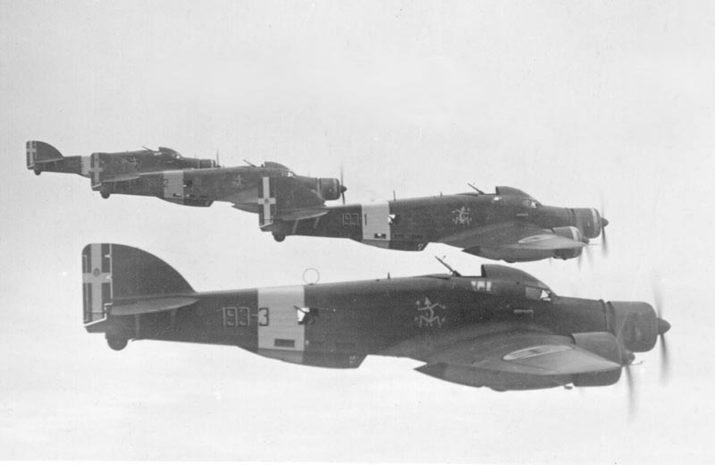
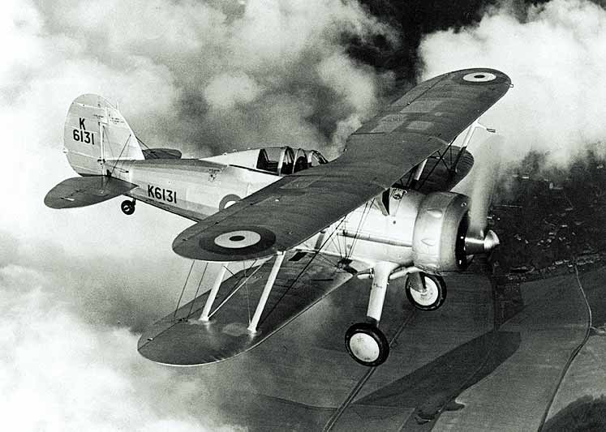
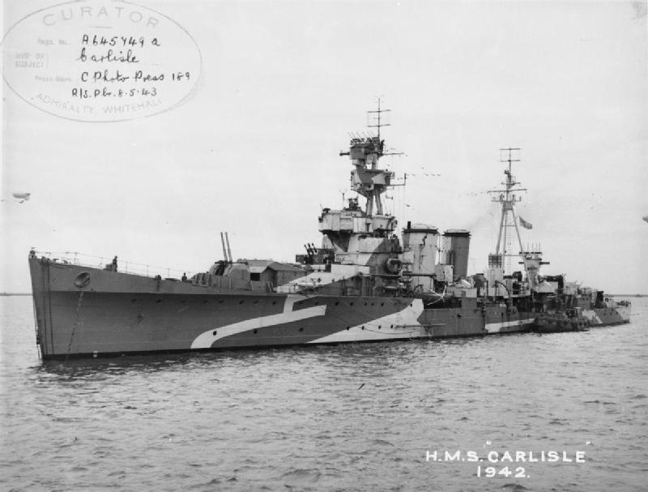
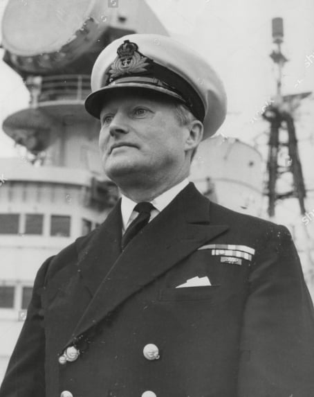
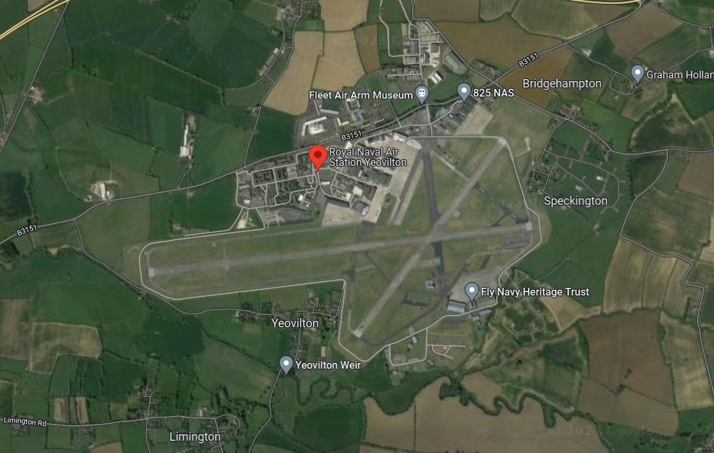
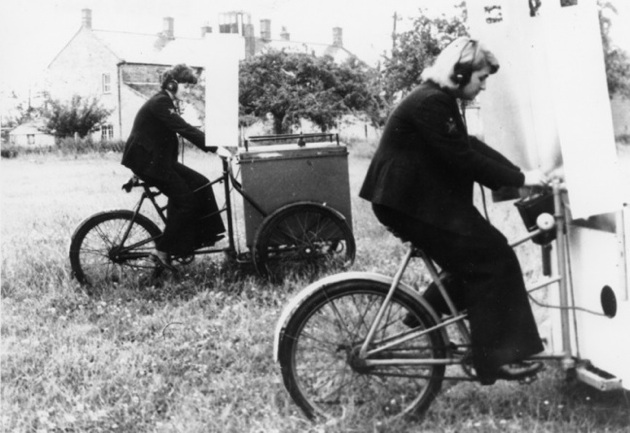
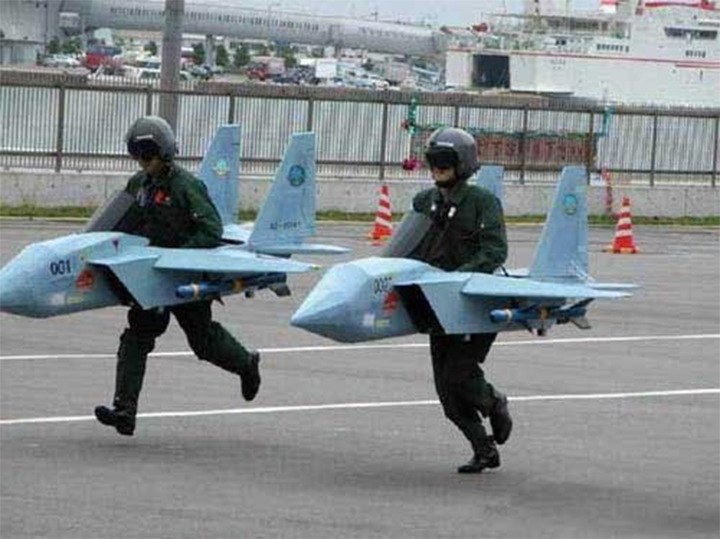

레이더 개발 이야기 (20) - 관제사를 키우자!
게시: 2023-02-09T06:30:38+09:00
<하드웨어의 성능 부족을 소프트웨어로 극복한다> 사진1은 WW2 당시 이탈리아의 자랑거리 Savoia-Marchetti SM.79 Sparviero. 원래 고속 중형 여객기로 개발되었다가 이탈리아 파시스트 정권의 눈에 들어 재빨리 중형 폭격기로 개조됨. 당시 폭격기 개발 기조는 '빠른 속력으로 전투기의 추격을 뿌리친다'라는 것이었는데, 양날개 뿐만 아니라 기수에도 엔진이 달려 3개의 프로펠러에서 뿜어내는 강력한 추진력으로 빠른 속력이 가능했기 때문. 덕분에 WW2 직전인 1937~1939년에는 전세계에서 가장 빠른 중형 폭격기라는 기록을 남겼을 정도.

1940년 6월, 이 SM.79이 이탈리아령 에티오피아에서 출격하여 아라비아 반도 남쪽 영국의 주요 항구인 Aden을 폭격하러 출격. 아덴을 지키는 영국 공군 편대는 놀랍게도 복엽기인 Gloster Gladiator (사진2). WW1도 아니고 WW2에 무슨 놈의 복엽기냐 싶지만 의외로 1937년 도입된 나름 최신예기. 하지만 최후의 복엽전투기답게 최고 속도는 고작 407 km/h. 그에 비해 폭격기 SM.79는 460 km/h. 이론적으로 요격 자체가 불가능.

하지만 아덴 항구에는 HMS Carlisle (4300톤, 29노트, 사진3)가 있었음. 카알라일은 WW1 말엽인 1918년 진수된 낡은 경순양함이었지만 카알라일은 1939년 대공 순양함(AA cruiser)으로 개조되며 Type 79Z 대공레이더가 장착되었음. 카일라일은 아덴 항을 향해 날아오는 이탈리아 폭격기들을 즉각 포착하고 그 고도와 속도, 위치와 방향을 영국 공군 글라디에이터들에게 알려주었을 뿐만 아니라, 가장 효과적인 요격을 위해 미리 어느 위치에서 대기하고 있을 것을 정확하게 유도.

결과는 대성공. 마치 기다렸다는 듯이 달려든 글라디에이터들과 카알라일의 대공포, 그리고 아덴 항구의 대공포들 사이에서 12대의 SM.79 폭격기 중 무려 9대가 격추되고 살아남은 3대도 인근 사막에 불시착. 이탈리아 공군 승무원들은 모조리 포로가 됨. 이것이 사실상 에티오피아 주둔 이탈리아 폭격 편대의 최후.
<여기가 영국인가 부칸인가?> 1941년 초 항모 HMS Ark Royal에서의 배속근무를 마친 항공 신호장교 Charles Coke 중령은 다음 배속지 협의를 위해 해군성(Admiralty)의 Naval Air Division을 방문. 이 자리에서 그는 레이더를 이용한 함재 요격기 관제사 훈련의 필요성을 역설. 더 이상 그냥 관제사 개인기에 의존하지 말고 제대로 된 정규 훈련이 필요하다는 것이 요점.

(Charles Coke 중령. 그는 WW2 기간 중 다른 항모 HMS Victorious에서도 복무했으며, 종전 이후인 1958~59년 사이에 그 항모의 함장으로 복무. 그 이후 그는 제독으로의 승진이 거의 확실했음에도 무슨 이유에선지 1960년 51세의 비교적 젊은 나이에 예편을 선택. 표면적인 이유는 그림과 가족 생활에 좀 더 많은 시간을 보내고 싶다는 것. 이후 화려하게 치장된 개인 요트를 몰고 와이프와 함께 세계 여행을 하는 등 정말 신선 놀음을 하다 프랑스에 정착. 이후 와이프가 사망하자 스페인으로 이주하여 2003년 거기서 사망.)
그런데 코크 중령에게 날아온 다음 배속지 통보서를 보니 '니가 말한 레이더를 이용한 함재 요격기 관제사 훈련소를 만들고 관제사를 배출하라'는 것. 훈련소 시설로는 지금도 로열 네이비 항공기지가 있는 영국 남서부 Yeovilton RN Air Station (사진2)의 관제탑이 주어짐. 그런데 딱 거기까지임. 아무런 지원이 없었음. 당장 WW2가 한창이고 조종사 훈련도 시급한 와중에 듣보잡 관제사 어쩌고 훈련소를 위한 지원이 충분했을 리가 없었음.

그럼에도 코크 중령은 굴하지 않고 로열 에어포스로부터 레이더 세트를 하나 빌려와 설치하고 3주간의 압축 코스 커리큘럼을 백지에서부터 만듬. 이 훈련 내용은 절반은 교실에서의 이론 교육이고 나머지 절반은 실습이었는데, 실습을 하려면 모의 폭격기의 공습과 함께, 그를 막기 위해 학생 관제사들의 지시에 따라 움직일 전투기가 필요. 코크 중령은 좀 낡았더라도 수송기나 훈련기 같은 것의 지원이라도 받기를 원했으나 전쟁통에 턱없이 부족. 불굴의 코크 중령이 마련한 차선책은 당시 아이스크림 장수들의 삼륜 자전거 (사진3). 나침반과 무전기, 메트로놈을 설치한 자전거를 가로세로 눈금을 표시한 넓은 공터에서 훈련생들에게 몰게 하되, 일부는 폭격기로서 정해진 코스를 달리게 하고, 일부는 요격기로서 관제사 역할을 하는 훈련생의 무전 지시에 따라 자전거를 달림. 이때 자전거를 모는 훈련생들은 눈으로 상대방을 보면 의식적/무의식적으로 속도나 방향을 바꾸어 회피/추격을 하는 것이 당연했으므로, 그를 막기 위해 자전거의 앞에는 커다란 판자를 붙여 앞을 못 보게 만들고, 약간 시선 아래 쪽에만 구멍을 뚫어 약 2~3m 앞까지만 볼 수 있게 만듬. 관제사 훈련생들은 공터의 눈금 위를 달리는 폭격기 자전거의 위치와 진행 방향, 속도를 계산하여 자기가 제어하는 전투기 자전거에게 무선을 보내 '좌측으로 30도 방향으로 분당 1칸 속도로 전진, 아니 더 천천히' 뭐 그런 식으로 유도.

이런 훈련이 실전에 도움이 되었을까? 1941년 7월에 8명의 훈련생으로 시작된 코크 중령의 관제사 훈련소는 예상대로 온갖 비웃음을 받음. 관제사 훈련생들도 7~8월의 뙤약볕 아래서 바보같은 삼륜 자전거를 몰아야 하는 것에 대해 무척이나 불만이 많았다고. 특히 애를 먹은 부분은 요격기 역을 맡은 자전거를 모든 훈련생들이 관제사 훈련생의 지시대로 움직이지 않고 훨씬 더 빠른 속도로 페달을 밟는 경향이 있었던 것. 다만 사진3처럼 폭격기 역할의 자전거를 여성 요원들이 몬 적이 있었는데, 그 여성들만 정해진 속도로 충실히 페달을 밟았다고.
그러나 이런 비웃음과 어려움에도 불구하고 코크 중령의 관제사 학교는 결과적으로 아무 비용을 들이지 않고도 엄청난 효과를 낸 희대의 성공작으로 평가됨. ** 사진3은 부칸 비웃을 때 많이 사용되지만 실은 어린이들을 위해 재롱 잔치 중인 일본 자위대 사람들이라고

** 레이더 개발과는 별도로 잠깐 시사 토픽.
<왜 미공군은 풍선 터뜨리기에 미쓸을 쏘았나>
이번에 난리가 난 중궈 스파이 기구를 격추시킬 때, 미공군 F-22는 Sidewinder AIM-9X 1발을 발사. 여기서 생기는 의문. 잔해 수거하여 중궈의 스파이 짓거리를 밝혀야 하는데, 그러자면 가급적 풍선만 안전하게 터뜨리고 그 밑에 달린 전자장비들에게는 피해가 거의 없어야 함. 그런데 왜 굳이 비싼 미쓸을 쏘았을까? 수소 풍선도 아니고 헬륨 풍선인데 그냥 20mm 캐논을 쏘는 것이 훨씬 싸고 훨씬 안전하지 않았을까?
이유는 의외로 간단. 기구라는 것이 애들 갖고 노는 풍선과는 달라서 총알 구멍 뚫린다고 펑 터지는 것이 아님. 또 워낙 공기가 희박한 고공에 있는 것이다 보니 헬륨 가스가 쉬이익 빨리 빠지지도 않음.
1998년 캐나다에서 (진짜) 기상관측용 기구를 띄웠는데, 원하는 데이터 수집 후 자폭하여 데이터 수집 장치를 투하하게 되어 있었는데 그게 고장나서 대서양으로 표류함. 그냥 냅둬도 될 것 같지만 여객기 등의 안전에 문제를 끼칠 수 있으므로 캐나다 공군 CF-18이 출동하여 (위와 질문과 똑같은 생각으로) M-61 20mm 벌컨을 1천발이나 갈김.
당연히 모조리 명중했으나 이 기구는 며칠 동안이나 그냥 계속 떠있었다고...
https://apnews.com/article/268893fddde785d029d5a51b136951eb
Canada Research Balloon Floats Away
OTTAWA (AP) _ A runaway weather balloon floating toward Britain over the North Atlantic is proving a tough target for some of Canada's top guns.
apnews.com